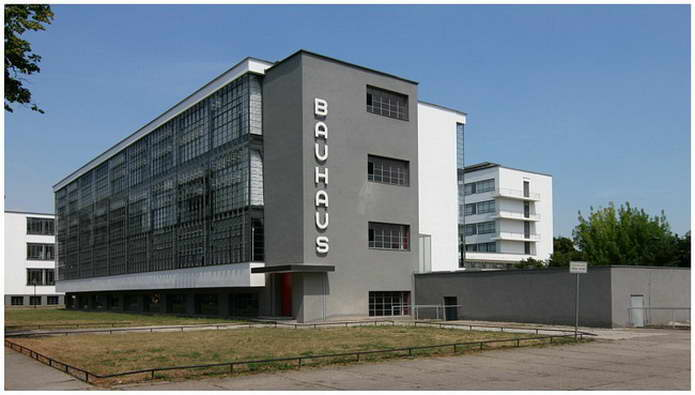
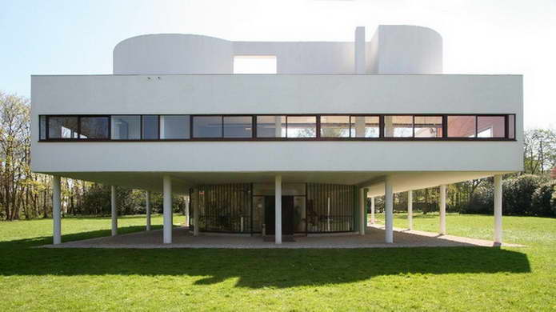
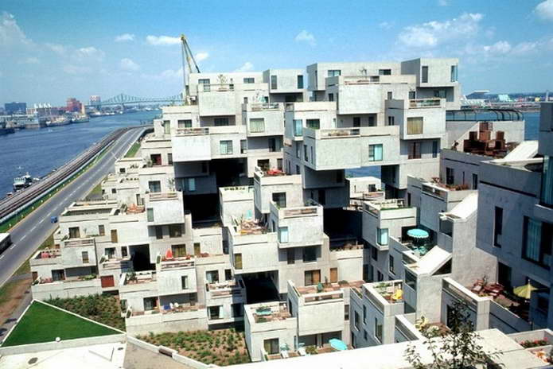
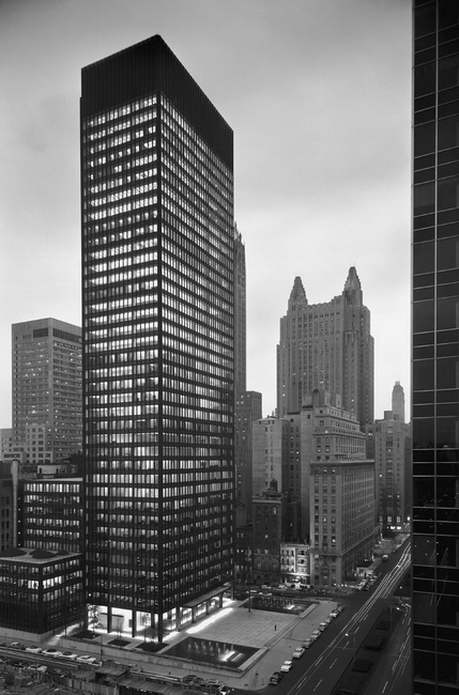

Появление Модернизма:
Охватывает период с начала 1900-х годов и по 70-е—80-е годы (в Европе), когда в архитектуре возникли новые тенденции.
Особенности Модернизма в архитектуре:
Созидание нового, чего-то такого, что соответствовало бы сегодняшнему дню. То есть, присутствует принципиальная установка на новизну архитектуры, — как конструктивных и планировочных идей, закладываемых в проекте, так и внешних форм. Образное выражение«призмы из бетона и стекла» хорошо передает общий характер построек модернизма.
Основные принципы архитектурного модернизма:
— использование самых современных строительных материалов и конструкций,
— рациональный подход к решению внутренних пространств (функциональный подход),
— отсутствие тенденций украшательства, принципиальный отказ от исторических реминисценций в облике сооружений,
— их «интернациональный» характер.
В своих истоках архитектурный модернизм основывался на новейших достижениях научно-технического и промышленного прогресса, а также на передовых социально-реформаторских идеях своего времени. Социальные установки архитекторов-модернистов отличались, как правило, явным демократизмом, а то и левизной, — по крайней мере, во многих декларациях его теоретиков.
Архитекторы работавшие в данном стиле:
Фрэнк Ллойд Райт, Вальтер Гропиус, Рихард Нойтра, Людвиг Мис ван Дер Роэ, Ле Корбюзье, Алвар Аалто, Оскар Нимейер и многие другие.
Классические примеры Модернизма в архитектуре:

Здание Баухауза в Дессау,арх. В. Гропиус, 1926-1929 гг.
Парламентское здание «Улей» в Веллингтоне, 1981, арх. Бэзил Спенс.

Вилла Савой в Пуасси, арх. Ле Корбюзье, 1930.

Жилой комплекс «Хабитат» на Экспо-67 в Монреале, 1955, арх. М. Сафди.

Здание «Сигрем» в Нью-Йорке, 1958, арх-ры Мис ван Дер Роэ, Ф. Джонсон.